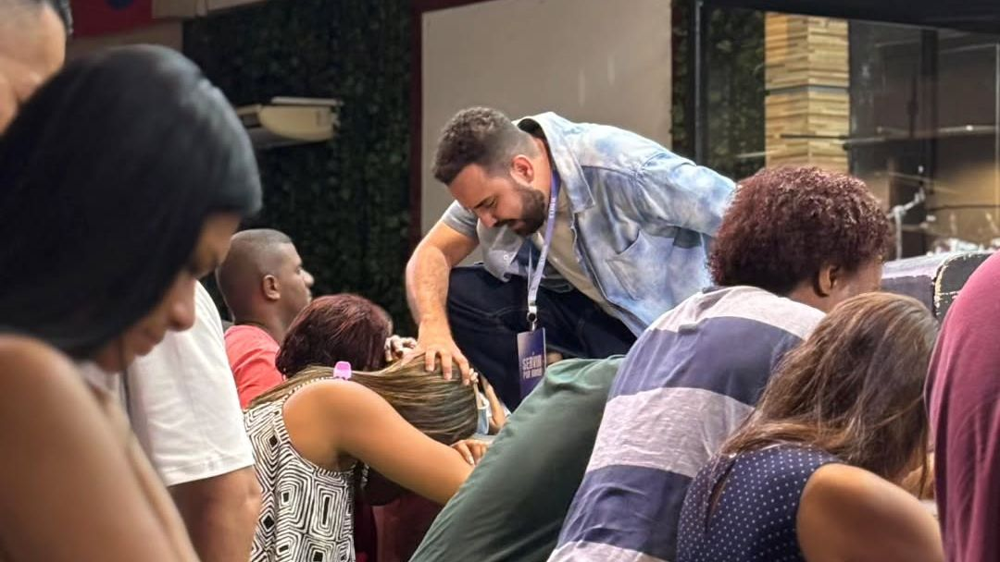

Princípios da
Adoração
Um manifesto profético para todos que servem no altar. Antes da luz, houve um som: a voz de Deus — o mesmo som que o seu altar é chamado a ecoar.
"Seu som carrega destino, governo espiritual e impacto atmosférico."
Mais que um livro, um manifesto.
Em tempos onde a adoração muitas vezes se confunde com entretenimento, este livro nos conduz de volta à essência profética.
"A adoração verdadeira não se trata de uma técnica perfeita, não se trata de entretenimento, não é performance — é uma extensão do som que ressoa no trono de Deus."
Os 3 modelos de adoração
Celebrando quem Deus é e o que Ele faz
Uma adoração vertical, de nós para Deus — gratidão, contemplação e rendição diante de Sua grandeza e bondade.
Espelhando o Céu e Anunciando o Reino
Rompe os limites do tempo natural e se alinha com o que já está acontecendo nos céus, trazendo o eterno para o agora.
Guerra Espiritual Cantada
A junção da música com a oração de guerra — clama, profetiza, libera decretos e entra em combate espiritual.
Quem é Gabriel Marques?
Gabriel carrega uma mensagem que desperta e realinha. Com mais de 15 anos servindo em ministérios de louvor e MBA pela FGV, ele combina espiritualidade profunda com excelência estratégica.
"Minha missão é servir a igreja local com intensidade, verdade e excelência."
ARCO Podcast
O instrumento para alinhar e lançar pessoas na direção do seu propósito.

Curso Presencial
Princípios da Adoração
Uma jornada intensiva de 2 dias para mergulhar nos fundamentos bíblicos e práticos da adoração. Ideal para equipes de louvor e líderes.

Leve esta mensagem para sua igreja ou evento.
Será uma alegria caminhar com vocês em um tempo de restauração, cura, libertação e ativação profética.